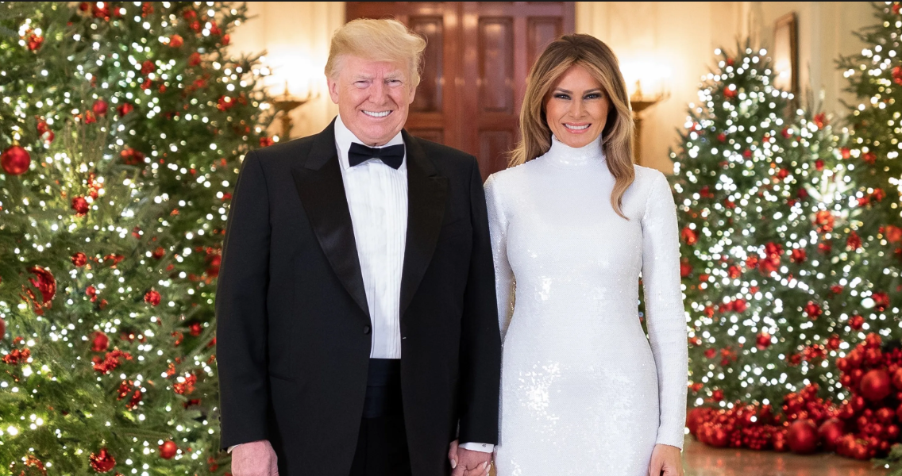
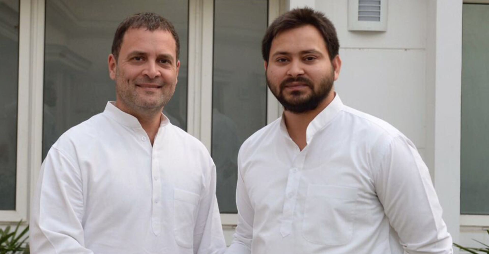
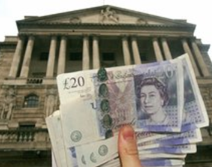
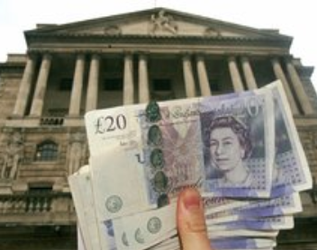
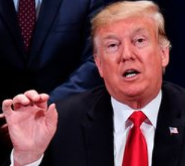
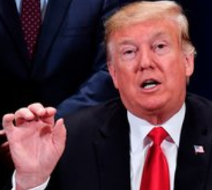

Brexit Talk reach stalemate
On 26 July 2016, just over one month after the Brexit Referendum, Enda Kenny had lunch with British Prime Minister Theresa May in Downing Street. Afterwards, the former taoiseach said: "We are both agreed very firmly there will be no return to a hard border as existed."
Read more

Donald and Melania get into the Christmas spirit
With Thanksgiving behind us, the White House has transformed into a beautifully-decorated backdrop for holiday parties hosted by President Donald Trump and First Lady Melania. The White House Christmas Reception welcomed a group of people into a fully-decorated home
Read more

Homelessness cannot be completely eradicated - Taoiseach
Taoiseach Leo Varadkar has said homelessness is one of the issues that keeps him awake at night. Speaking on RTÉ's Late Late Show, Mr Varadkar said it was particularly troubling that so many children were being forced to live in temporary accommodation.
Read more
Top Political Books of 2018
One of the world’s most influential political theorists takes on one of the most urgent themes in contemporary politics. In characteristic style, Fukuyama ranges well beyond Donald Trump and Brexit to look at other contemporary political phenomena — such as the Arab Spring and Chinese nationalism.
Read more

Distress over Inida president
Amid the apparent rift within the National Democratic Alliance (NDA) over seat sharing in Bihar for Lok Sabha elections 2019, the constituents of the Magathbandhan are slated to meet in the national capital on Thursday. The meeting, which will be attended by the representatives of the Congress party and the Rashtriya.
Read more
French Presidentail Elections
Voters in France went to the polls on Sunday in the first round of the presidential election. The top two candidates, independent Emmanuel Macron and far-right Marine Le Pen, go into a runoff in a fortnight. Find out where each drew most support and what happens next in this article today...
Read more
 

 
